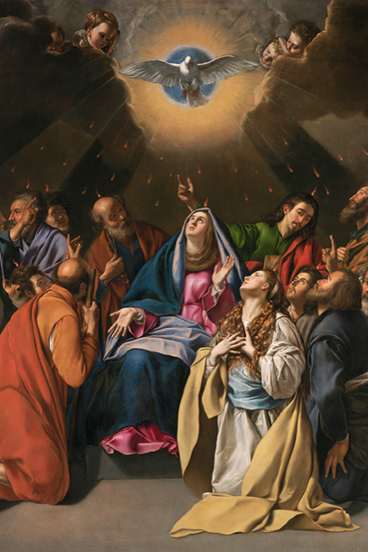
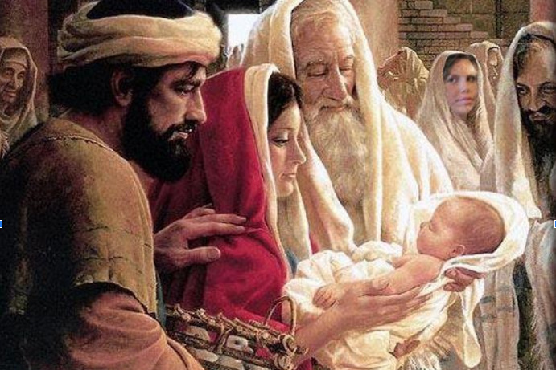
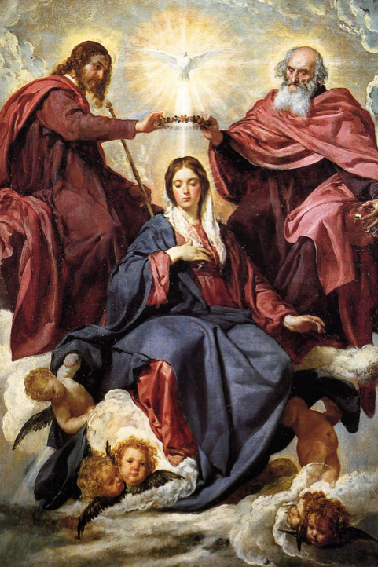

Terço missionário
Mistérios Gloriosos
Quartas e domingos
Introdução:
Elevemos nossas preces a Deus Uno e Trino que, em sua misericórdia,
nos convida a viver em comunhão com Ele e com toda a humanidade.
Rezemos o terço missionário trazendo para o coração da Trindade as
buscas dos povos de todas as nações e culturas por um mundo de paz.
Que Maria, a Mãe de Jesus e Rainha das Missões, interceda por todos os
missionários e missionárias, especialmente aqueles que vivem em
regiões mais distantes e desafiadoras.
Rezando o Terço Missionário possamos nos fortalecer na fé, esperança e
caridade e contribuir para a transformação do mundo de acordo com o
Evangelho.
Oferecimento
Divino Espírito Santo, iluminai nossas inteligências e nossos corações para que, ao meditarmos os mistérios da nossa redenção, possamos imitar o exemplo de Jesus e de Maria, anunciando a todas as pessoas o amor misericordioso de Deus para conosco.
Em comunhão com toda a humanidade, oferecemos nossas orações: pela paz no mundo, pelas pessoas vítimas das injustiças, pela santificação das famílias, por aqueles que anunciam o Evangelho nos cinco continentes, pelas intenções do Papa, por nossas comunidades e por todo o povo de Deus, para que seja sempre mais solidário com os povos do mundo inteiro.
Nossa Senhora, Estrela da Evangelização, fazei que todas as pessoas de boa vontade se deem as mãos e se tornem construtoras de uma sociedade sem fronteiras, justa e solidária.
Rezemos os mistérios gloriosos celebrando a vida nova que Jesus oferece aos que o seguem.
No 1º mistério contemplamos a ressurreição de Jesus (Lc 24, 1-6).
Oração pela África
O povo africano é alegre, cheio de vida e muito acolhedor. No canto e
na dança transforma a dor em alegria e renova suas energias.
Que o anúncio do Evangelho traga novas esperanças ao continente
africano, transformando as forças da morte em nova vida.
Rezemos pelas crianças e jovens para que possam receber uma educação
de qualidade que os ajudem a construir um futuro de paz, harmonia e
abundância.
Pai-Nosso...
10 Ave-Marias
Glória ao Pai..
Ó meu Jesus, perdoai-nos, livrai-nos do fogo do inferno, levai as almas todas para o céu e socorrei principalmente as que mais precisarem de vós.
No 2º mistério glorioso contemplamos a ascensão de Jesus ao Céu (Lc 24, 50-51).

Oração pelas Américas
O continente americano é marcado pela miscigenação de diferentes povos
e culturas.
Ofereçamos nosso apoio e respeito aos povos indígenas que lutam pela
demarcação de suas terras e conservação de suas culturas.
Peçamos perdão ao povo negro, trazido como escravo da mãe África,
reconhecendo sua dignidade com as mesmas oportunidades.
Acolhamos aos migrantes de todas as partes como nossos irmãos e irmãs
para que o Reino anunciado por Jesus se realize no encontro de todos
os nossos povos e culturas.
Pai-Nosso...
10 Ave-Marias
Glória ao Pai..
Ó meu Jesus, perdoai-nos, livrai-nos do fogo do inferno, levai as almas todas para o céu e socorrei principalmente as que mais precisarem de vós.
No 3º mistério contemplamos o a descida do Espírito Santo (At 2, 1-4).
Oração pela Europa
Rezemos por todos os povos europeus e pelo seu legado cultural e
religioso. Agradeçamos a Deus por tantos exemplos de santos e santas
que vivenciaram o amor a Deus e às pessoas em gestos e obras concretas
que continuam até hoje fazendo o bem.
Peçamos que o Espírito Santo ilumine os jovens e suscite novas
vocações para o continente europeu. Que este possa experimentar uma
nova evangelização, encarnada na realidade do mundo de hoje e aberta á
defesa da vida em todas as suas formas e á solidariedade com os mais
pobres.
Pai-Nosso...
10 Ave-Marias
Glória ao Pai..
Ó meu Jesus, perdoai-nos, livrai-nos do fogo do inferno, levai as almas todas para o céu e socorrei principalmente as que mais precisarem de vós.
No 4º mistério contemplamos a assunção de Nossa Senhora ao Céu (Dogma da Igreja).
Oração pela Oceania
A Oceania para nós é um continente distante e desconhecido. Cada ilha
guarda seus mistérios e encantos naturais. Uma grande diversidade de
povos e culturas habitam desde as pequenas ilhas até a extensão
continental da Austrália.
Muitos nunca receberam o anúncio do Evangelho, outros o acolheram com
amor e dão frutos de fé, enquanto que alguns o abandonaram.
A Oceania também necessita da presença salvadora de Jesus e do
Evangelho que liberta e trás vida nova.
Peçamos a proteção de Deus a todos os missionários e missionárias que
deixam tudo e se lançam nas grandes distâncias dos mares para
testemunhar o amor de Deus.
Pai-Nosso...
10 Ave-Marias
Glória ao Pai..
Ó meu Jesus, perdoai-nos, livrai-nos do fogo do inferno, levai as almas todas para o céu e socorrei principalmente as que mais precisarem de vós
No 5º mistério contemplamos a coroação de Maria Rainha dos Anjos e dos Santos (Apocalipse 12,1)
Oração pela Ásia
Peçamos pelo futuro do continente asiático e por todos os povos que
nele habitam para que possam crescer na paz e no respeito pelas
diferenças e se unir em solidariedade às grandes causas da humanidade.
Que os valores do Evangelho possam tocar os corações das pessoas e
humanizar as forças que geram a morte, o ódio e a destruição.
Rezemos pelos missionários e missionárias que constroem pontes de
amizade, respeito e diálogo, trabalhando sempre em favor da vida.
Que o Espírito Santo ilumine a todas as pessoas de boa vontade para
somarem forças e construírem a paz.
Pai-Nosso...
10 Ave-Marias
Glória ao Pai..
Ó meu Jesus, perdoai-nos, livrai-nos do fogo do inferno, levai as almas todas para o céu e socorrei principalmente as que mais precisarem de vós.
Conclusão
Infinitas graças vos damos, Soberana Rainha, pelos benefícios que, todos os dias, recebemos de vossas mãos liberais. Dignai-vos, agora e para sempre, tomar-nos debaixo do vosso poderoso amparo e, para mais vos obrigar, vos saudamos com uma Salve Rainha:
Salve, Rainha, Mãe de Misericórdia, vida, doçura e esperança nossa, salve! A vós bradamos, os degredados filhos de Eva; a vós suspiramos, gemendo e chorando neste vale de lágrimas. Eia, pois, advogada nossa, esses vossos olhos misericordiosos a nós volvei e, depois deste desterro, mostrai-nos Jesus, bendito fruto do vosso ventre. Ó clemente, ó piedosa, ó doce e sempre virgem Maria.
Rogai por nós, Santa Mãe de Deus,
Para que sejamos dignos das promessas de Cristo. Amém.